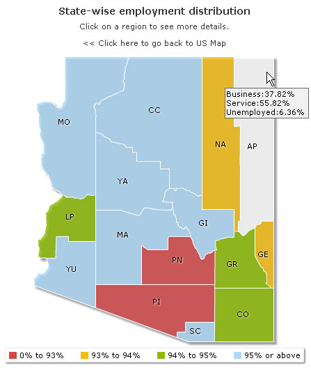

|
| Each entity of the main US map on click drills down to StateDetails.aspx page passing its Internal id and map swf file name to it. In this section we will see the code in StateDetails.aspx and how the page handle these requests and renders map. |
| |
| Before moving further with the process of plotting data from database, we recommend to go through "Using dataXML Method" and "Using dataXML Method" to know the basics about FusionMap generation procedure. |
| |
| The code discussed here is present in Download Package > Code > ASP > DrillDown folder. |
| |
| The code of StateDetails.aspx file is as follows: |
| |
<%@ Page Language="VB" AutoEventWireup="false" CodeFile="StateDetails.aspx.vb" Inherits="DrillStateDetails" %>
<html>
<head>
<title>FusionMaps v3 - Database Example</title>
<script language="Javascript" src="../JSClass/FusionMaps.js"></script>
</head>
<body>
<form id='form1' name='form1' method='post' runat="server">
<% %>
<asp:Literal ID="StateDetailsMap" runat="server" />
</form>
</body>
</html>
|
| |
| In the above code, we first include FusionMaps.js file to enable us embed the map using JavaScript. The drilled down State map loads in Literal StateDetailsMap through the following code behind script (StateDetails.aspx.vb): |
| |
Imports InfoSoftGlobal
Partial Class DrillStateDetails
Inherits System.Web.UI.Page
Protected Sub Page_Load(ByVal sender As Object, ByVal e As System.EventArgs) Handles Me.Load
Dim dataURL As String
dataURL = Server.UrlEncode("DataGen.aspx?op=GetStateDetails&Internal_Id=" & Request("Internal_Id"))
Dim mapHTML As String = FusionMaps.RenderMap("../Maps/" + Request("map"), dataURL, "", "mapid", "600", "400", False, False)
StateDetailsMap.Text = mapHTML
End Sub
End Class |
| |
In the above code we do the following :
- We create a dataURL to fetch map XML from DataGen.aspx (whose code behind page is DataGen.aspx.vb).
- We call renderMap() function from FusionMaps class of InfosoftGlobal assembly which renders map of USA after passing the dataURL to it.
|
| |
| The file DataGen.aspx is passed a querystring - ?op=GetStateDetails. As we have discussed in the previous page that depending on the value of op the code calls related subroutines using select case statement. Hence, when op's value is GetStateDetails it calls GetStateDetails() subroutine which in turn builds and returns the map XML as dataURL. |
| |
| Let's now go thorough the code of GetStateDetails() subroutine in DataGen.aspx.vb. |
| |
Imports DataConnection '
Imports System.Text
...
Public Sub GetStateDetails()
Dim strXML As New StringBuilder
Dim sumdata As Double
Dim strQuery As String
strXML.Append("<map borderColor='FFFFFF' fillAlpha='80' hoverColor='FFFFFF' showBevel='0' legendBorderColor='F1f1f1' legendPosition='bottom'>")
strXML.Append("<colorRange>")
strXML.Append("<color minValue='0' maxValue='93' displayValue='0% to 93%' color='D64646' />")
strXML.Append("<color minValue='93' maxValue='94' displayValue='93% to 94%' color='F6BD0F' />")
strXML.Append("<color minValue='94' maxValue='95' displayValue='94% to 95%' color='8BBA00' />")
strXML.Append("<color minValue='95' maxValue='100' displayValue='95% or above' color='AFD8F8' />")
strXML.Append("</colorRange>")
strXML.Append("<data>")
strQuery = "select a.Internal_Id,a.entity_id,sum(data) as datap from fcmap_distribution a group by a.Internal_Id,a.entity_id having a.Internal_Id='" & Request("Internal_Id") & "'"
Dim Rs As New DbConn(strQuery)
sumdata = 0
If Rs.ReadData.HasRows = True Then
While Rs.ReadData.Read()
Dim tooltext As String
tooltext = ""
Dim totEmp As Double
totEmp = 0
Dim StateValue As Double, TotalStateValue As Double, StatePer As Double
StateValue = 0 : TotalStateValue = 0 : StatePer = 0
strQuery = "select a.Internal_Id,a.entity_id,b.group_name,sum(data) as datap from fcmap_distribution a, fcmap_group_master b where b.group_id=a.group_id group by a.Internal_Id ,a.entity_id, b.group_name having a.Internal_Id='" & Rs.ReadData("Internal_Id").ToString() + "' and entity_id='" & Rs.ReadData("entity_id").ToString() & "'"
Dim Rs1 As New DbConn(strQuery)
While Rs1.ReadData.Read()
StateValue = Convert.ToDouble(Rs1.ReadData("datap"))
TotalStateValue = Convert.ToDouble(Rs.ReadData("datap"))
StatePer = Math.Round((StateValue / TotalStateValue) * 100, 2)
tooltext = tooltext & Convert.ToString(Rs1.ReadData("group_name")) & ":" & StatePer & "% " & Chr(13)
If Rs1.ReadData("group_name").ToString() <> "Unemployed" Then
totEmp = totEmp + StatePer
End If
End While
Rs1.ReadData.Close()
Dim LinkURL As String
LinkURL = Server.UrlEncode("Charts.aspx?" & Request.ServerVariables("QUERY_STRING") + "&entity_id=" + Rs.ReadData("entity_id"))
strXML.Append("<entity id='" & Rs.ReadData("entity_id") & "' value='" & totEmp & "' link='" & LinkURL & "' tooltext='" & tooltext & "' />")
End While
End If
Rs.ReadData.Close()
strXML.Append("</data>")
strXML.Append("<styles><definition><style type='animation' name='animX' param='_xscale' start='0' duration='1' /><style type='animation' name='animY' param='_yscale' start='0' duration='1' /><style type='animation' name='animAlpha' param='_alpha' start='0' duration='1' /><style type='shadow' name='myShadow' color='FFFFFF' distance='1' /></definition>")
strXML.Append("<application><apply toObject='PLOT' styles='animX,animY' /><apply toObject='LABELS' styles='myShadow,animAlpha' /></application></styles>")
strXML.Append("</map>")
Response.ContentType = "text/xml"
Response.Write(strXML.ToString())
End Sub |
| |
| Let's discuss the process flow of this subroutine in details: |
| |
- Like the previous page, we initialize database connection.
- We also create a variable - strXML to store map XML.
- Next, we initialize root map element and add color range settings in XML.
|
- Then using SQL we sum up the total population of each entity or county (represented by entity_id) of the selected state (represented by its Internal_Id).
|
| "select a.Internal_Id,a.entity_id,sum(data) as datap from fcmap_distribution a group by a.Internal_Id,a.entity_id having a.Internal_Id='" & Request("Internal_Id") & "'" |
| |
- Now we iterate through each entity/county of the map/state and get details like percentage of employment in Business, in Service and percentage Unemployed population.
- To achieve this, we create another data reader Rs1 using the following SQL:
|
| "select a.Internal_Id,a.entity_id,b.group_name,sum(data) as datap from fcmap_distribution a, fcmap_group_master b where b.group_id=a.group_id group by a.Internal_Id ,a.entity_id, b.group_name having a.Internal_Id='" & Rs.ReadData("Internal_Id").ToString() + "' and entity_id='" & Rs.ReadData("entity_id").ToString() & "'" |
- Here, Rs1 stores records each having total of each group - Business, Service and Unemployed - in each record. So iterating through each, we calculate percentage of employment of each group and total employed population. This we did using the following calculation:
|
While Rs1.ReadData.Read()
StateValue = Convert.ToDouble(Rs1.ReadData("datap"))
TotalStateValue = Convert.ToDouble(Rs.ReadData("datap"))
StatePer = Math.Round((StateValue / TotalStateValue) * 100, 2)
tooltext = tooltext & Convert.ToString(Rs1.ReadData("group_name")) & ":" & StatePer & "% " & Chr(13)
If Rs1.ReadData("group_name").ToString() <> "Unemployed" Then
totEmp = totEmp + StatePer
End If
End While
Rs1.ReadData.Close() |
- The above code also shows that we also generate custom tool-text for each entity to show Percentage of population in Business, Service and Percentage of Unemployed population for each district/entity of that state's map. We create a variable - tooltext and accumulate group name and corresponding percentage of each group in it.
- Moreover we also keep a total of employment percentage in totEmp variable. This we did by skipping "Unemployed" group.
|
| |
| Providing map data |
| Let's now discuss how to provide data to each enity of the map. In the above outer iteration through each entity we also add our code to add <entity> element. |
| |
LinkURL = Server.UrlEncode("Charts.aspx?" & Request.ServerVariables("QUERY_STRING") + "&entity_id=" + Rs.ReadData("entity_id"))
strXML.Append("<entity id='" & Rs.ReadData("entity_id") & "' value='" & totEmp & "' link='" & LinkURL & "' tooltext='" & tooltext & "' />") |
| |
- As entity id we use the "entity_id" field from the first data reader -Rs.
- We give total employed percent stored in totEmp as value attribute of each entity.
- We set tooltext attribute from tooltext variable.
- We also create links that drill-down to another page showing details of the clicked district/entity in charts.
|
| Thus, we create entity data. |
| |
- Finally we apply style like XScale, YScale, alpha & shadow styles to the map using <styles> element and
- And we return the XML as dataURL to renderMap() function of StateDetails.aspx.vb.
|
| |
Response.ContentType = "text/xml"
Response.Write(strXML) |
| |
| The above mentioned renderMap() function renders the map retrieving the XML. Its acquires the SWF file requesting the querystring - Request("map"). Finally, the rendered map is set to the literal control StateDetailsMap. |
| |
Dim mapHTML As String = FusionMaps.RenderMap("../Maps/" + Request("map"), dataURL, "", "mapid", "600", "400", False, False)
StateDetailsMap.Text = mapHTML |
| |
| Here is the snapshot of the detailed county map: |
| CodeASPCSDB_Structure |